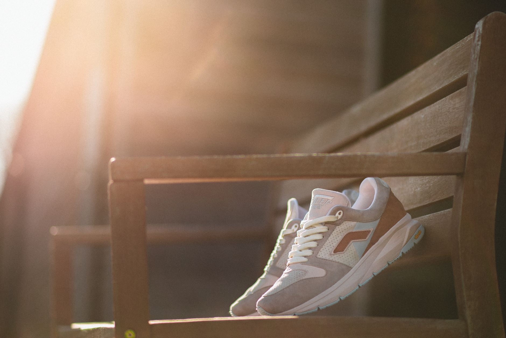

Apparatus
One request enters as plain language. Senter parses it, routes it to the bot that owns the work, that bot pulls files, tools and schedules, and the result comes back as markdown.
Open the walkthrough
Legend
Readout
Route stepper
Step through the apparatus to see what each stage of a request does.
Active step
01
Owning path
bots/<slug>/BOT.md
Step 01
Parse — Senter reads the request and matches it against each bot's mission line in bots/<slug>/BOT.md.
Step 02
Route — Senter hands the request to the one bot that owns the work; no other bot touches it.
Step 03
Execute — the owning bot opens its context in .system/, runs a skill from skills/<name>/SKILL.md on the schedule held in loops/<name>.md, and reaches a hold point if the action needs one.
Step 04
Return — the result leaves as markdown, back through Senter to the wiki.
Hold points interrupt the execute step.
Inspector — readout
One bot, one folder.
Everything the bot knows is a file you can open.
Apparatus · Comparative readout
Where the state lives, how you read it, how you change it, and what happens when it breaks.
| Surface | Where the state lives | How you read it | How you change it |
|---|---|---|---|
| Markdown file vault | Plain text checked into a vault directory; one file per record. | Read the file, or grep across the directory. | Edit the file; commit; redeploy. |
| Database engine | Rows behind a schema; the engine owns the record. | Query by key or index through the engine. | Insert, update, delete through the engine. |
| Dashboard view | A view over whatever sits upstream; it keeps nothing on its own. | Glance at rendered panels on an interval. | Only through the upstream surface it mirrors. |
Senter receives the request and reads its address before anything else happens. Nothing reaches a bot until that reading is complete.
The address is matched against the fleet index. The bot that owns the matching entry is the only one the request is handed to.
The request stops at the interlock. It is held rather than passed on, and the hold point is recorded.
No. Each request has one owning bot, and the path ends there. What that bot does next is its own business.
The route from Senter to the owning bot is fixed. Differences between bots begin only after the handoff.
Held requests appear in the safety records, and every completed handoff lands in the results log.